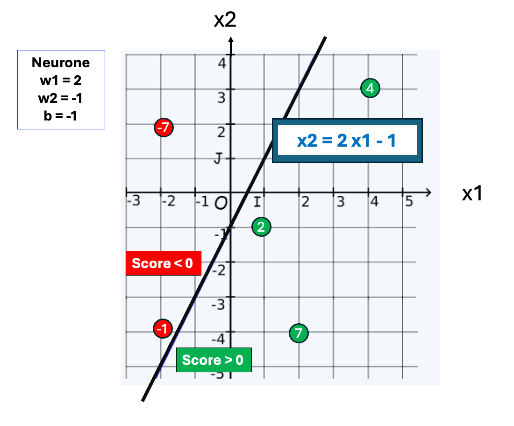

Le neurone artificiel : une fonction, pas un organe
Le neurone biologique (simplifié)

Si le cumul des stimulations reçues par un neurone franchit son
seuil d'excitation, il active son axone.
Si d'autres neurones sont connectés en aval à ses
synapses, l'information se propagera.
Il se forme alors un réseau de neurones biologiques, capable de
traiter l'information et de prendre des décisions.
Le neurone artificiel : un calcul inspiré du neurone biologique
Un neurone artificiel reproduit la logique du neurone biologique
par des calculs simples.
Il a un certain nombre d'entrées (deux dans l'exemple), chacune
avec un poids associé, et une sortie unique, sa prédiction.

Schéma d'un neurone à deux entrées
La formule de calcul du score brut d'un neurone artificiel à 2
entrées x1, x2 est simplement : w1·x1 + w2·x2 + b
Les poids w1 w2
codent l'importance de chaque entrée dans la décision commune.
Dans un plan x1,x2, le calcul définit une droite (de pente
-w1/w2) qui sépare les résultats positifs des négatifs
Le
biais b décale la droite de
l'origine (0,0) (de -w2/b)
Représentation géométrique des calculs d'un neurone artificiel
Un neurone découpe des régions dans l'espace des nombres réels. En deux dimensions, c'est une droite frontière.

Les poids w1,w2 conditionne la pente d'une droite, décalée de l'origine par le biais.
( on a affiché quelques valeurs de score brut )
Le plan est découpé en deux parties: une où les scores bruts
sont positifs et l'autre où les scores bruts sont négatifs.
La valeur du score brut montre la distance, positive ou
négative, du point à la frontière de décision .
Une légère variation des poids modifiera la droite: un point
proche pourra plus facilement changer de côté qu'un point
éloigné.
Ce fonctionnement est standard : tout neurone artificiel découpe l'espace en deux parties.
- Avec deux entrées il sépare le plan (x1,x2) en deux parties par une droite.
- Avec trois entrées, il séparera l'espace en deux parties par un plan.
- Avec n entrées, il séparera un hyperespace en deux parties par un hyperplan.
La fonction d'activation : du score brut au score de sortie
La
fonction d'activation f transforme le score brut
en un
score de sortie : résultat final =
f (score brut)
C'est par le changement de fonction d'activation que l'IA a pu
décoller du perceptron initial.
Le neurone ancêtre perceptron est un classifieur binaire
Le perceptron est le premier et le plus simple des
neurones artificiels, mais il est suffisant pour en illustrer le
fonctionnement.
La
fonction d'activation du
perceptron, nommée H du nom de son inventeur
(Heaviside), est basique et binaire:
- Si le score brut est supérieur ou égal à 0, son
score final est ramené à 1, sinon il est réduit à 0.

Le perceptron est un classifieur binaire.
- Filtrage de spam (un message est-il spam ou non)
- Détection de fraude bancaire (transaction frauduleuse ou légitime)
- Diagnostic médical (présence ou absence d'un marqueur de maladie)
- Analyse de sentiment (avis positif ou négatif)
- etc.
Si on a plusieurs catégories on entraîne N classifieurs, un par
classe.
Si les catégories sont exclusives One-vs-all (OvA) il
faut veiller à ce qu' une seule sortie soit positive.
🟡 Expérimenter: piloter un feu tricolore avec deux interrupteurs
On veut que selon la position des interrupteurs un seul feu
s'allume.
Du code simplissime pourrait le faire, mais l'ambition ici est
d'utiliser des perceptrons pour s'en sortir.
Un neurone ne sait faire que des calculs : il faut transformer
notre problème en nombres.
On prend arbitrairement comme convention qu'un interrupteur
fermé a la valeur 1.0 et un interrupteur ouvert la valeur 0.0
De même on considère qu'une prise est alimentée si sa valeur est
1 et hors tension si elle vaut 0 .
But à atteindre
| Interrupteurs x1 x2 | sortie attendue | prises actives |
|---|---|---|
| ouvert ouvert: 0 0 |

|
0 0 0 |
| ouvert fermé: 0 1 |

|
1 0 0 |
| fermé ouvert: 1 0 |

|
0 1 0 |
| fermé fermé: 1 1 |

|
0 0 1 |
Un neurone pour chaque feu
Un neurone n'ayant qu'une sortie. Il faut un réseau de 3 neurones distincts, un pour chaque prise.

Réseau des 3 neurones perceptrons avec leurs paramètres
individuels.
Chacun multiplie x1 et x2 par ses propres poids.
La couche de sortie doit allumer un seul feu à la fois.
A propos de la taille des modèles IA
Le modèle est le tableau numérique
des paramètres une fois le réseau entrainé. Sa taille est son
nombre de paramètres.
- Notre réseau a 1 couche (de sortie) et 3 neurones avec 3 paramètres chacun. C'est un modèle a 9 paramètres
- Les réseaux de neurones pour la reconnaissance d'images ont des millions (106) de paramètres et des dizaines de couches.
- Les grands LLM (Large Language Model) en ont des milliers de milliards (1012) et des centaines de couches.
Le fonctionnement de base reste toujours le même que ce soit pour 10 , 106 ou 1012 paramètres, mais la puissance de calcul à mobiliser est exponentielle.